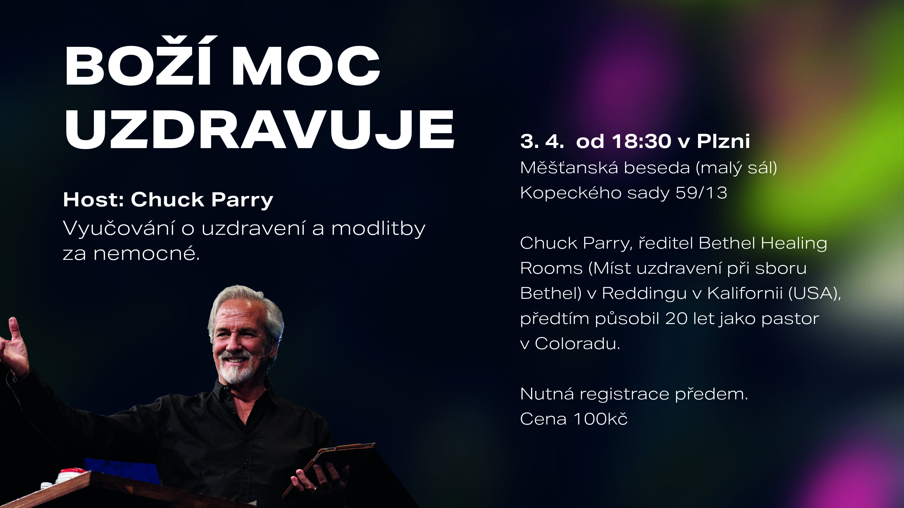
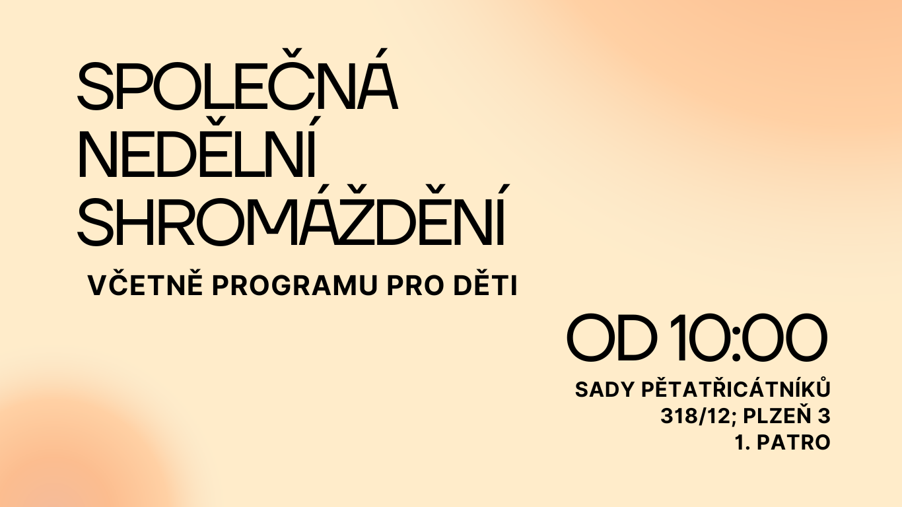

Akce
Zveme Vás na:
Boží moc uzdravuje
Řečník: Chuck Parry
ředitel Bethel Healing Rooms (Míst uzdravení při sboru Bethel) v Reddingu v Kalifornii (USA), předtím působil 20 let jako pastor v Coloradu
Večer s modlibami za uzdravení
Kdy a kde
Čtvrtek 3. 4. v Plzni od 18:30
v Měšťanské besedě (malý sál),
Kopeckého sady 59/13, 301 00 Plzeň 3.
Pořádá
Pořádá KMS ve spolupráci se Společenstvím křesťanů Úvaly a Křesťanským centrem Plzeň.
Nutná registrace předem
Cena: 100 Kč
Registrace: zde

Dále Vás zveme na
pražské setkání
Boží moc uzdravuje
Řečník: Chuck Parry
Biblické vyučování o uzdravení i modlitby za nemocné.
Kdy a kde
Pondělí a úterý 1. a 2. 4. v Praze vždy od 18:30, místo bude upřesněno dle počtu přihlášených
2. 4. od 10:00 v Praze proběhne uzavřené setkání pro vedoucí s prostorem pro dotazy. V případě zájmu o účast pište na kancelar@kmspraha.cz.
Pořádá
Pořádá KMS ve spolupráci se Společenstvím křesťanů Úvaly a Křesťanským centrem Plzeň.
Nutná registrace předem
Cena: 100 Kč/večer
Registrace: zde
Kontakt: kancelar@kmspraha.cz
Bližší informace: www.kmspraha.cz
